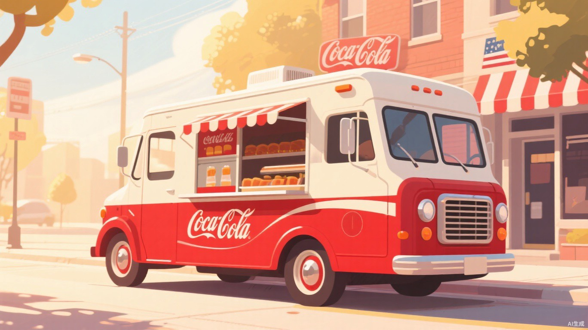
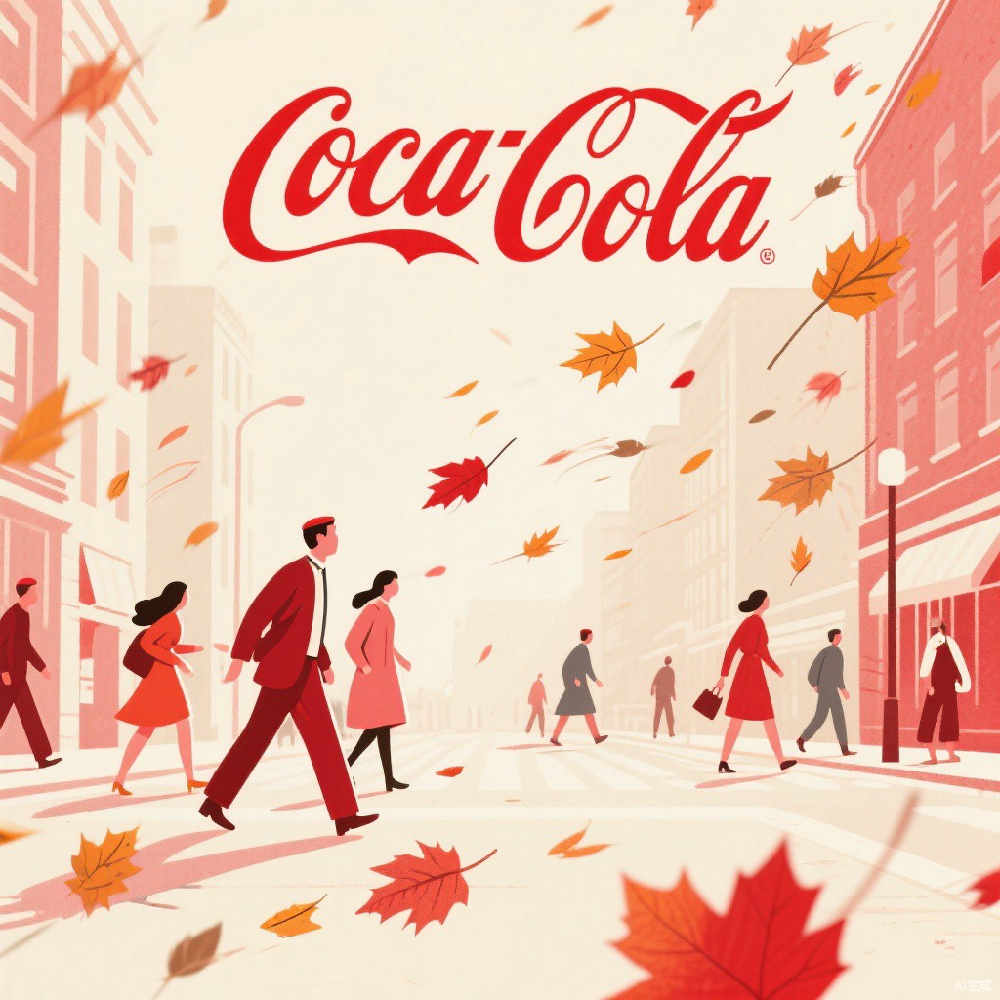
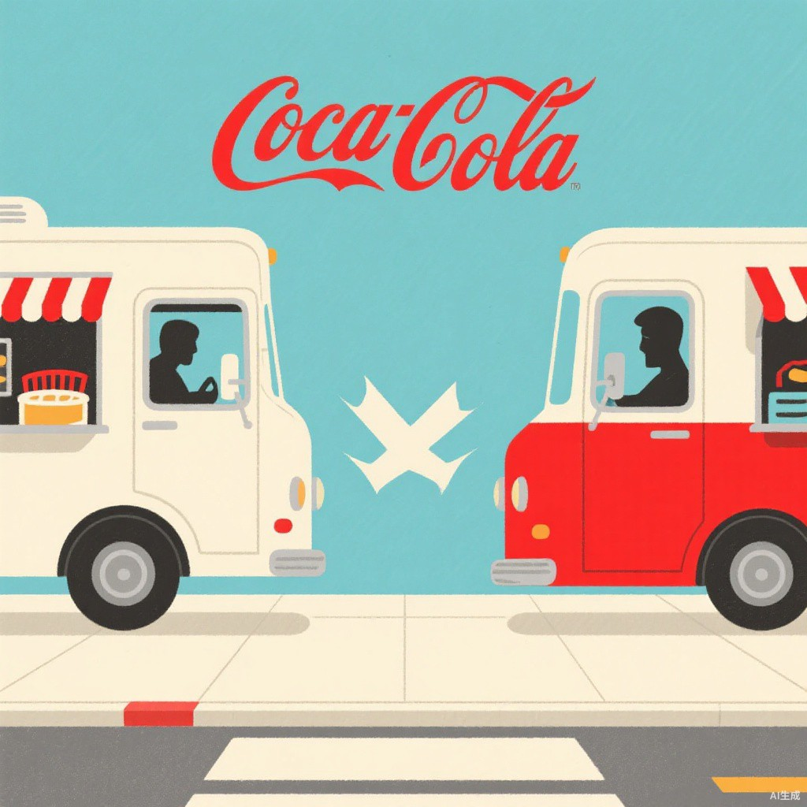
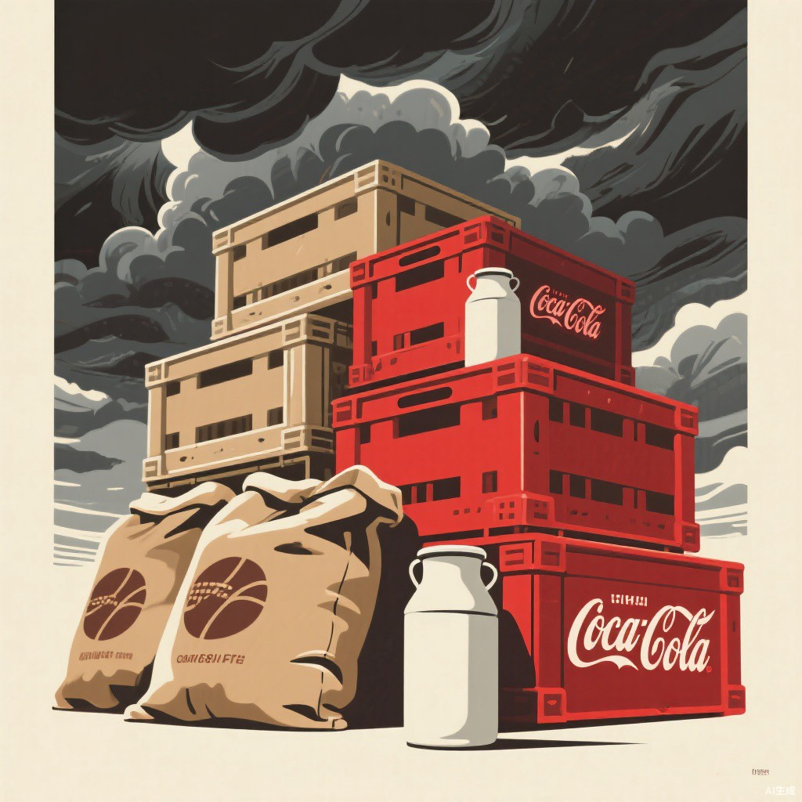
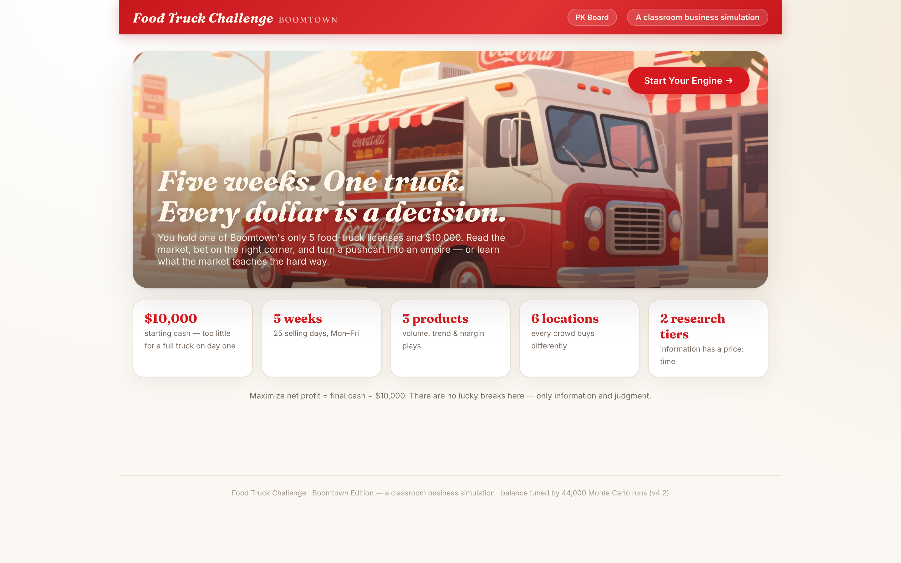
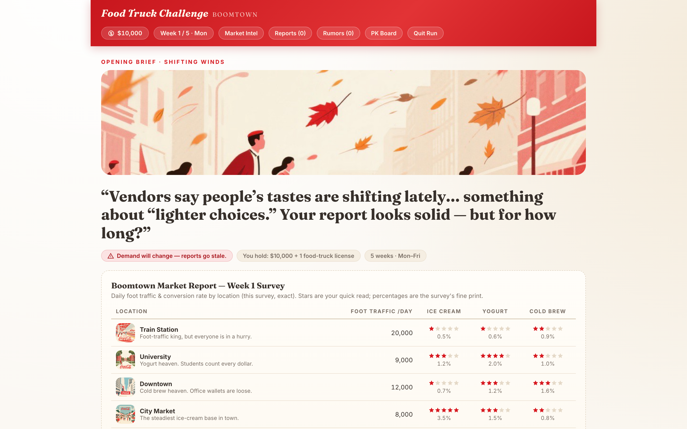
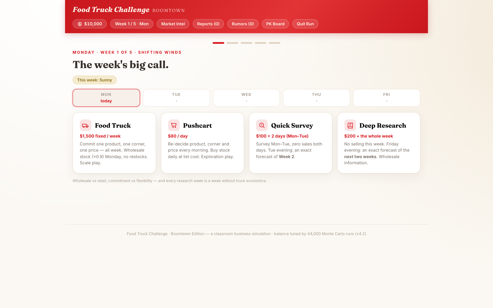
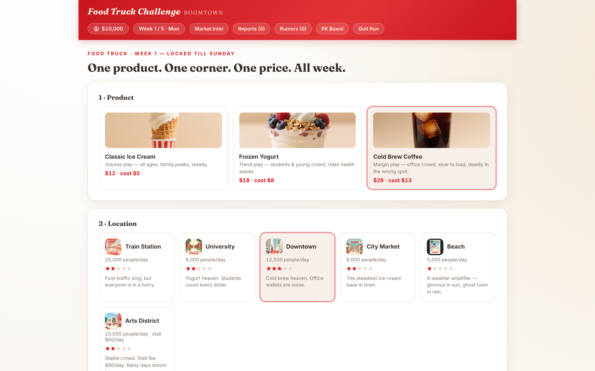
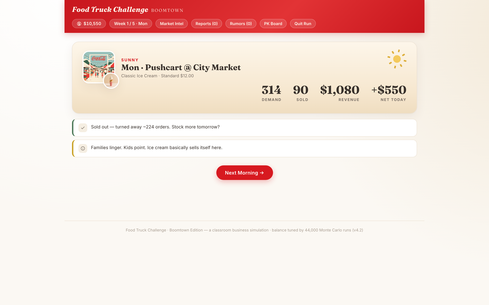
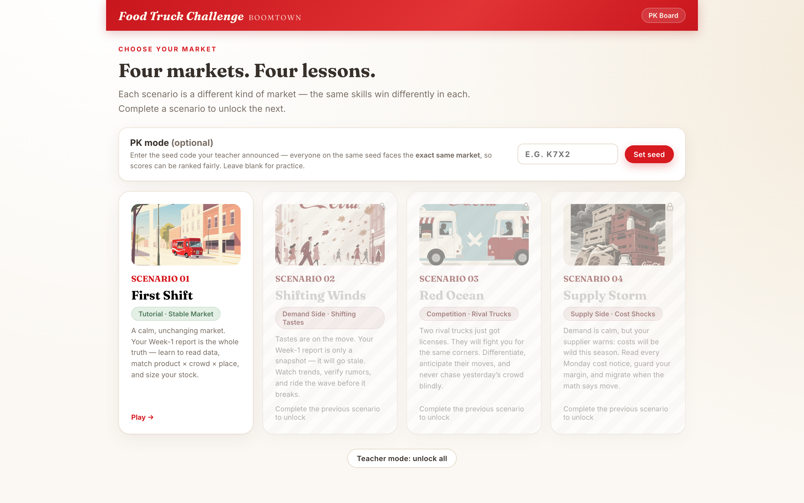

三种市场结构，25 天 × 3 轮的完整经营周期。这份回顾帮助你系统整理课堂上的每一次决策与反馈——把赛场上的直觉，沉淀为可复用的商业判断。
你在 Food Truck Challenge（餐车创业挑战）中扮演 Boomtown 小镇的餐车创业者：以 $10,000 启动资金，完成 5 周 × 5 个工作日的完整经营周期——解读市场报告、选择产品、确定点位、制定价格、管理库存，并判断何时值得为信息付费。这是一个具备真实财务后果的模拟市场：天气改变客流结构，消费偏好持续漂移，竞争者争夺同一批顾客，供应商随时调整价格——你的每一个决策，都会直接体现在利润表上。
经营期满时，期末现金 − $10,000 = 净利润（Net Profit），全班按净利润排名。周一现金低于 $200 即宣告破产——与真实商业世界一致：利润决定你能走多远，现金流决定你能否走到。
课程直接进入三种非理想市场环境：需求侧漂移、竞争侧挤压、供给侧冲击。三种市场结构对应三种截然不同的经营策略——能在三种环境中都保持盈利，才算真正理解了经营决策的本质。
本次课程包含三轮模拟，分别对应三种典型的市场结构。复盘的第一步，是识别你身处的是哪一种市场——对市场结构的判断，优先于对单个数字的判断。

本轮外部扰动集中在需求侧：无恶劣天气、无直接竞争、成本稳定，唯一的变量是消费者偏好的持续漂移——健康风潮推动冻酸奶需求逐周加速上升，冷萃则被逐步挤出市场；中途的美食节更将单点客流放大数倍。你手中的第 1 周市场报告，从第 2 周起便开始失效。
"沿用第 1 周的最优组合直至终局"——五周内市场主角已经更替，固守者的利润较趋势跟随者低近三成。在需求漂移的市场中，经验的有效期只有一周。

本轮引入两位 AI 竞争者：一位固守高流量点位，一位持续追逐上一周的热门区域。同点位同品类竞争时，你只能获得约 65% 的原始需求。与此同时市场信号纷杂——返校节、网红效应、一场正在逼近的风暴——孰真孰假，唯有调研能够确证。
"满仓追逐上一周的热点"——或与同样追热点的竞争者相互分流，或在热点退潮后迎面遭遇风暴，曾有队伍单周亏损 $12,000。在竞争市场中，滞后一周的信息往往已是陷阱。

本轮需求端平稳，压力全部来自供给侧：成本。供应商每周一发布新的成本通告——乳制品、咖啡豆、燃油轮番上调，中途的霜冻事件更令原料成本翻倍、供货减半。顾客没有变化，但你的毛利（Margin）正被逐周侵蚀。
"上周畅销，本周照卖"——霜冻周仍满仓冷萃的队伍，单周利润从 $14,000 跌至 $3,000。在供给侧冲击中，沿用旧成本结构无异于持续失血。
以下六个概念并非来自讲授，而是你在三轮模拟中实际运用、验证并修正过的。逐条对照：你在哪一轮用到了它？
火车站客流量最大，但行色匆匆的通勤者极少购买冰淇淋；海滩客流最小，晴天转化率却最高。真实需求 = 客流 × 转化率（Traffic × Conversion）。三档定价之间的选择，本质是"更多客流"与"更高单客毛利"之间的权衡。
回忆一下：哪个"产品 × 地点"组合曾带给你超预期的一天？背后是哪一个变量在起作用？
餐车每周固定成本 $1,500、推车每天 $80——固定成本不因停业而消失。你学会了关注毛利（Margin）而非营业额，也理解了现金储备的意义：周一现金不足 $200，经营即刻终止。
回忆一下：S3 霜冻周你的毛利收缩了多少？是否及时调整了产品组合？
备货量是本课程中决策难度最高的环节：备货不足产生缺货损失（错失的销售），备货过量产生报废损失（沉没的成本）。你学会了以毛利结构指导权衡——毛利高则偏向多备，毛利薄则必须保守。这正是经典的报童模型（Newsvendor Model）。
回忆一下：报废损失最大的一天，是信息不足，还是明知风险仍选择激进？
启动资金不足以支撑满配餐车——这是模拟的刻意设计。最优路径是以低成本的推车（Pushcart）快速测试多个"产品 × 地点"组合，验证盈利模型后再切换餐车（Food Truck）规模化。这正是创业中的最小可行产品（MVP）方法。
回忆一下：三轮中你是否曾在第一周便重仓投入？后续轮次你的节奏有何变化？
市场报告会失效，传闻可能失真。你可以购买调研（Research）获得精确预测——但调研占用的营业天数才是真正的成本。购买决策的标准只有一条："这条信息是否会改变我的行动？"若否，则无购买价值。
回忆一下：S2 风暴周，购买调研与未购买的队伍，结局相差多少？
同点位同品类竞争将分流近半数需求。盲目追逐"上一周的热点"，往往与竞争者正面相撞或遭遇需求转向——这是模拟中代价最高的决策错误。采用差异化定位的队伍，盈利稳定性显著更高。
回忆一下：S2 中你是否与竞争者正面遭遇？下一次你会如何规避？
认识 Boomtown：全城仅有 5 张餐车执照，你持有其一。共读市场报告，练习以"客流 × 转化率"估算需求，理解四种经营方式在成本结构与灵活性上的差异。
第一轮模拟。消费偏好持续漂移、期初报告逐步失效——先识别趋势者，先获得美食节红利。
对照结果：固守冷萃与迁移冻酸奶的队伍，利润差距从何而来？
第二轮模拟。两位 AI 竞争者入场争夺点位，市场信号纷杂——返校节、网红效应、逼近的风暴，哪些值得投入成本确证？
追逐热点遭遇风暴的单周亏损，与调研避险创造的 $20k 差距。
第三轮模拟。需求平稳而成本剧烈波动：每周一的成本通告决定经营组合，霜冻周检验真章。
三轮结果汇总；将各轮最优策略映射回六个核心概念——三种市场结构，三种经营策略，一条共同主线。
以下画面均来自你在课堂上实际操作过的界面。

"Five weeks. One truck. Every dollar is a decision." —— 五周、一辆车、每一块钱都是决策。你的 Boomtown 经营从这里开始。

你的第一份经营数据：六个点位的客流与转化率。请记得——在需求迁移的市场中，它从第 2 周起便开始失效。

餐车、推车、快速调研、深度调研——规模、灵活性与信息三者不可兼得，这是你每周的资源配置取舍。

产品 × 点位 × 定价的组合，加上备货量的风险判断——还记得 Intel 条的标签吗？先判断信息可信度，再采用数字。

每日经营复盘：需求、销量、收入、净利与系统反馈。优秀的经营者每天都在此处修正自己的假设。

四种场景对应四种市场结构。本次课程完成了其中三场高阶挑战：需求、竞争与成本。